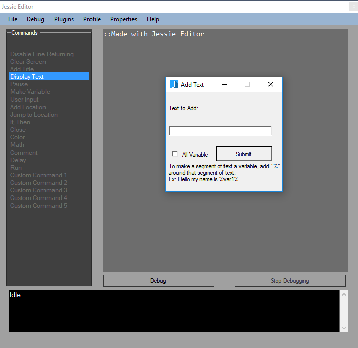
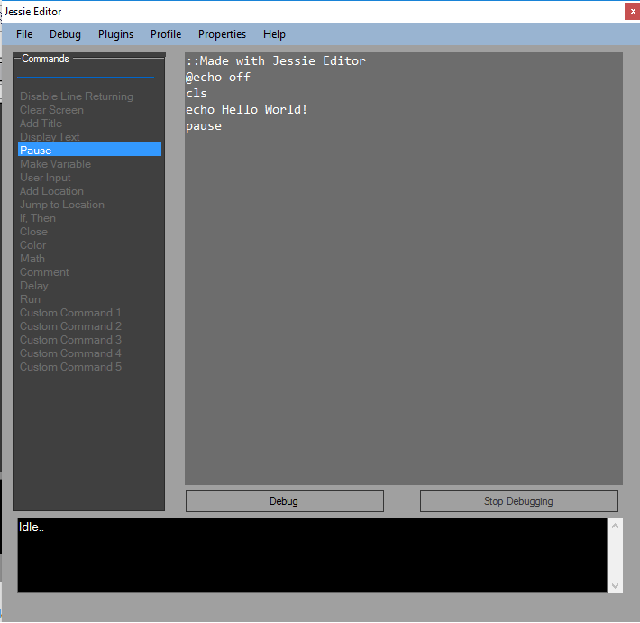
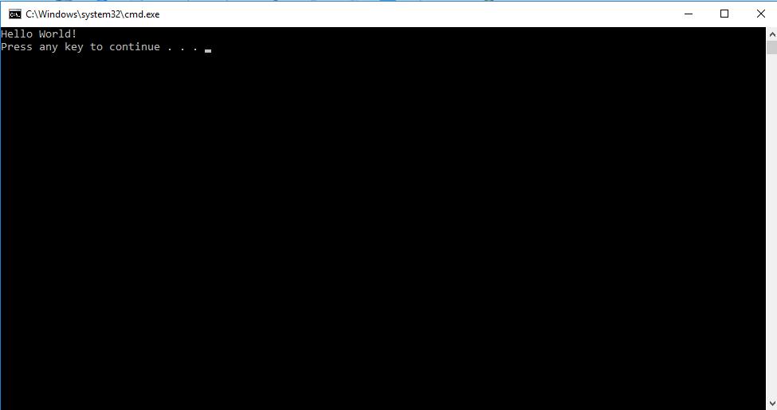

Hello World
This is a small tutorial on how to create your first program.
Start Jessie Editor and select the disable line returning commands in the commands sidebar.
This will add the command to the main editor. This command stops your program from displaying
all the code of your program when it is running.
Next you want to click the the clear screen command. This will clear any previous output in the
program and it will create a better overall appearance of your program.
After that you will want to click the Display Text command. A message box will popup. Type
in the following text into the text box, "Hello World!" then click the submit button. And finally
click the pause command. This will pause the program until the user pushes a key.

The finished program should look like this:

To run the program click the debug button.
The program should look like this:

If it looks like this then congratulations! You just made your first program. As a reward your teacher will give you 50 points.
back